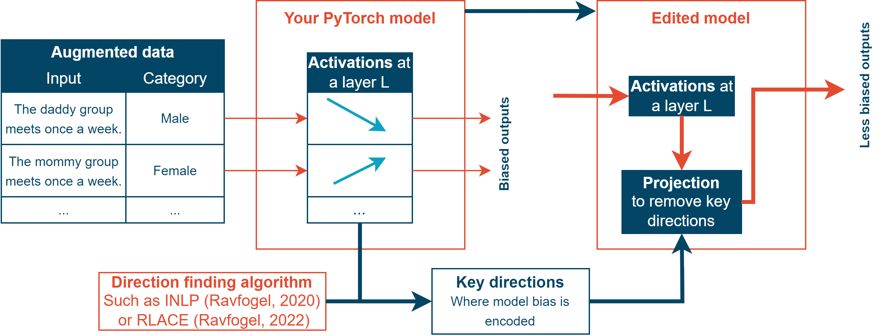
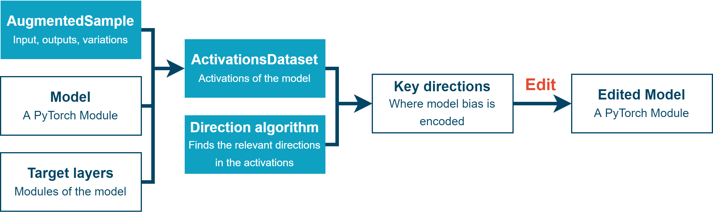

Usage
Installation
To use CounterGen, first install it using pip:
(.venv) $ pip install countergenedit
Diagram of How Editing Works
{kind=link}
Abstract Workflow
{kind=link}
Outline of the editing process
PyTorch Model Loading
To be able to edit the models, you need to have the model stored locally because the most common APIs don’t allow users to have access to internal activations and don’t let you edit the weights.
This library provides tools to evalute and edit PyTorch models. First, load your PyTorch module. Then, you will be able to evalute it by turning it into a ModelEvaluator using one of the following:
pt_to_generative_model()andget_generative_model_evaluator()to evalute generative modelsget_classification_model_evaluator()to evalute classification models
Measuring Internal Bias
Then, to know where to do the editing, you need to know what’s different in the inner workings of the model between different categories.
Once you have generated variations of your data using countergen, ActivationsDataset provides some utilities to measure the inner activations of the model, and gives you a PyTorch dataset of (activations, category) pairs. You can also do that manually using other utilities if you want a more fine grained measurements.
Finding the Relevant Directions
Based on those measurements, you want to extract the relevant places where the model stores differences between the categories.
A natural way to do so is to find “features”: linear combinations of neurons which have been found to often capture the human understandable concepts we care about. We provide three methods to allow you to find the directions most relevant to the concept that’s different between one category and another, which all have some advantages and disadvantages:
INLP by Ravfogel, 2020: see https://aclanthology.org/2020.acl-main.647/
RLACE by Ravfogel, 2022: see https://arxiv.org/pdf/2201.12091.pdf
Span of an MLP classifier.
More details about each methods can be found in the relevant section:.
Editing the Model
Once you have compute the relevant directions, you can easily produce a modification configuration using get_edit_configs() and edit the model using edit_model(), which will give you a new model that projects activations during the forward pass to remove most of the distinction your model makes between the differents categories of data you want your model to treat as equals.
And that’s it! Now you can evaluate your model again by using countergen, and export your model as you would export any PyTorch model.